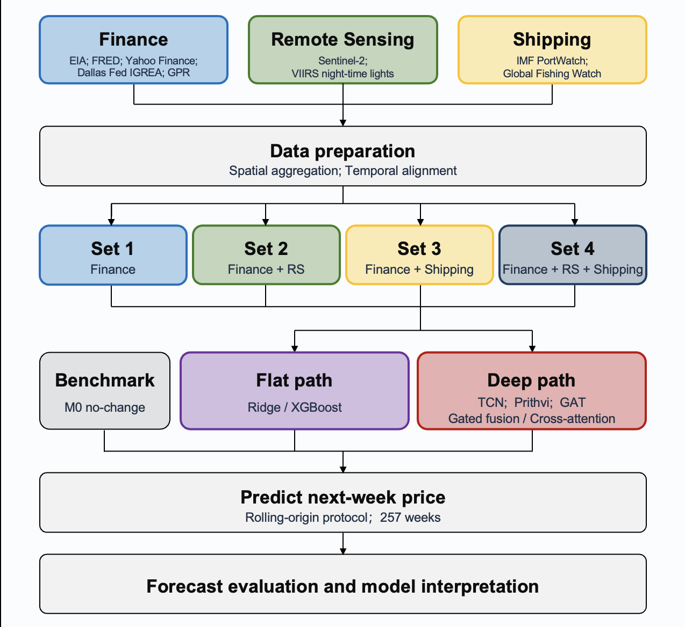
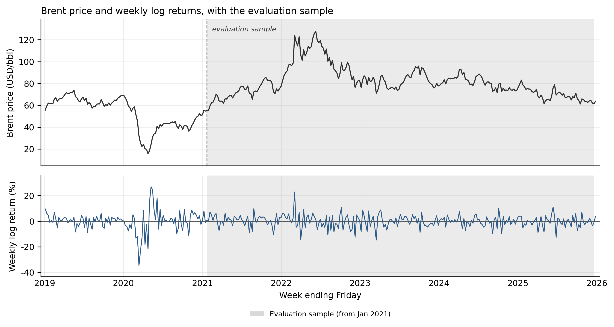
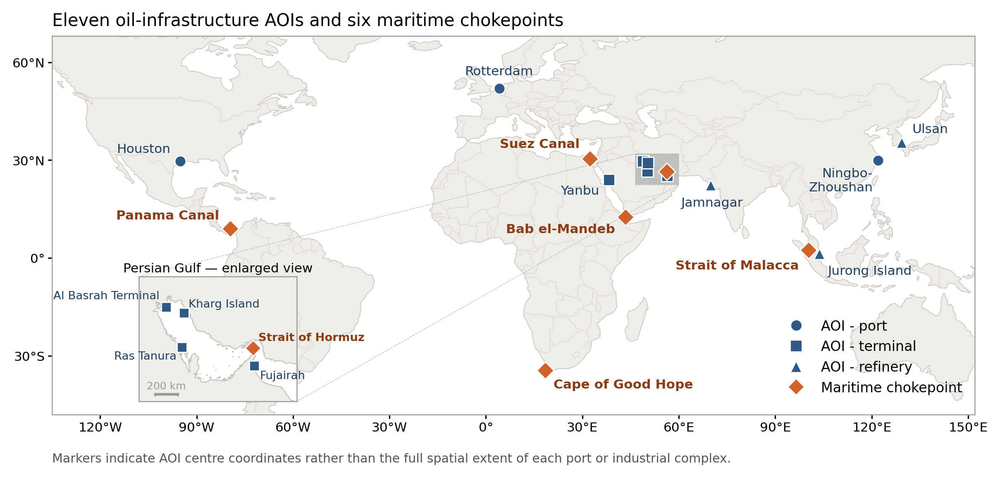
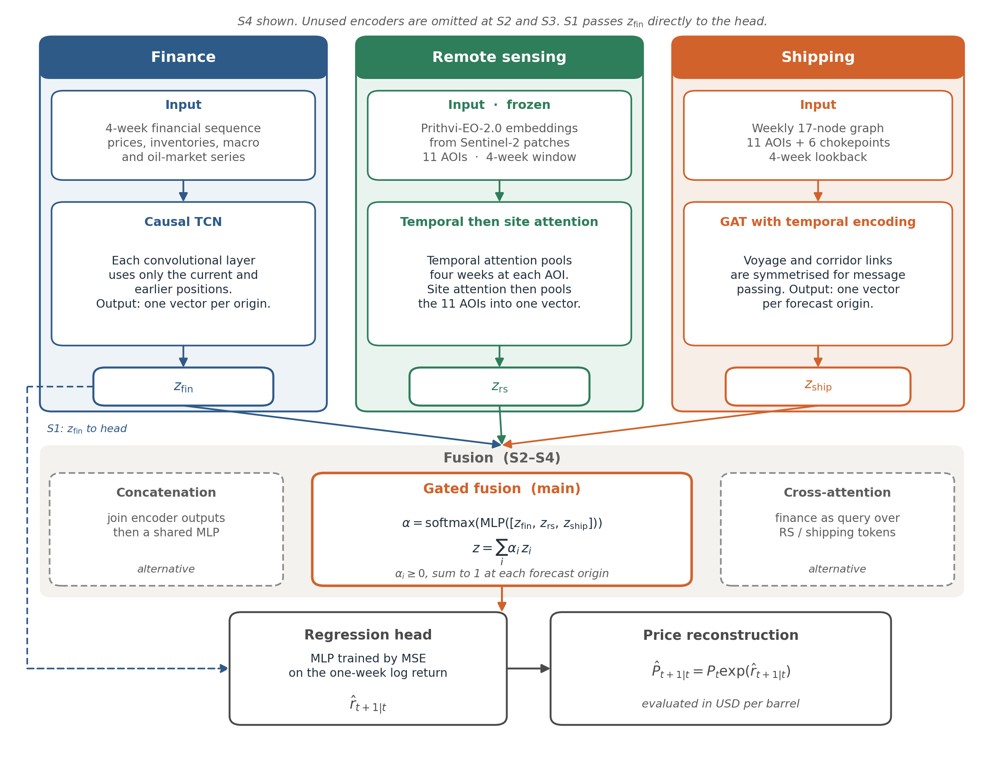
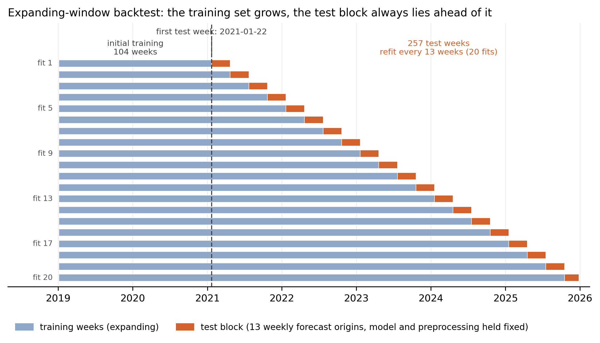
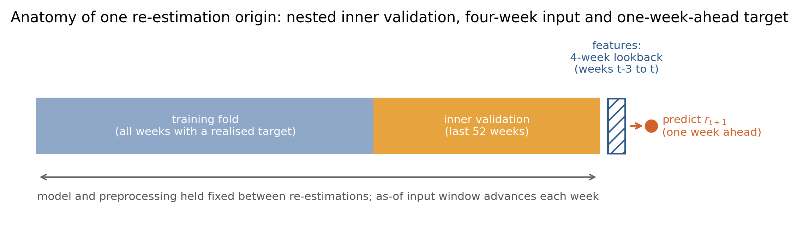

Chapter 3 Methodology
3.1 Research design
The baseline for this study is a simple no-change benchmark, which predicts that next week’s Brent price will equal this week’s price. All learned models are evaluated against this benchmark. The available information is divided into different information sets, and models are trained and evaluated separately on these sets to examine whether different types of data provide useful predictive information and whether different ways of combining information affect forecasting performance. All specifications share the same weekly forecast dates, sample window and evaluation rules.
The no-change benchmark is denoted M0. At each forecast origin \(t\), where \(P_t\) is the Brent price in week \(t\), M0 sets the one-week-ahead price forecast equal to the current weekly price:
\[\begin{equation} \hat{P}_{t+1|t}=P_t. \tag{3.1} \end{equation}\]
The predictors are organised into four information sets. S1 contains financial time series only, including financial, macroeconomic and oil-market variables. S2 adds remote sensing to S1, S3 adds shipping to S1, and S4 adds both modalities. S2 and S3 are parallel extensions of S1 rather than successive stages, while S4 combines the two. Table 3.1 lists the four sets together with the M0 benchmark.
| Set | Variables |
|---|---|
| Benchmark (M0) | Last week’s price |
| S1 | Financial time series only (financial, macroeconomic and oil-market series) |
| S2 | S1 + remote sensing |
| S3 | S1 + shipping |
| S4 | S1 + remote sensing + shipping |
Two model families are applied to these information sets. The Flat family first combines all selected predictors into a weekly feature table. The most recent weeks are then flattened into a single row and used to fit Ridge and XGBoost. This early joining of features is called flat feature fusion. The Deep family initially keeps each data type separate. Financial, remote-sensing and shipping data are encoded independently. The resulting representations are then combined, with gated fusion learning how much weight to assign to each data type. Flat and Deep are compared using the same information set and evaluation sample. Because the two families also differ in model class, capacity and some modality-specific representations, these comparisons are interpreted as comparisons between overall modelling strategies rather than as tests of fusion alone. Fusion is assessed more directly within the Deep family by comparing simple concatenation, gated fusion and cross-attention while holding the encoders and inputs fixed. Together, these comparisons address RQ2.
Within each model family, comparisons across S1–S4 use the same forecasting method and evaluation sample; only the information included in the model changes. S2 against S1 measures the contribution of adding remote sensing alone, while S3 against S1 measures the contribution of shipping. S4 against S1 measures their joint contribution. S4 against S3 and S4 against S2 examine whether each source still adds useful information once the other is already included. These comparisons, together with each model’s comparison against M0, address RQ1.
RQ3 is restricted to Deep specifications that outperform M0 under the predefined criterion. For these specifications, the study reports the weights assigned to finance, remote sensing and shipping data, and examines how model attention patterns vary across different market conditions. These quantities are used to describe which information the models rely on.
Figure 3.1 summarises the research design.

Figure 3.1: Research design: data blocks, the M0 benchmark and information sets S1–S4, the Flat and Deep families, and the shared expanding-window evaluation.
3.2 Prediction target and sample period
Let \(P_t\) denote the last available daily Brent spot-price observation in week \(t\), where each week ends on Friday, measured in US dollars per barrel. The forecast target is next week’s price \(P_{t+1}\). Models are not trained directly on the price level. They predict the one-week logarithmic return
\[\begin{equation} r_{t+1}=\log\left(\frac{P_{t+1}}{P_t}\right) \tag{3.2} \end{equation}\]
and reconstruct the price forecast as
\[\begin{equation} \hat{P}_{t+1|t}=P_t\exp\left(\hat{r}_{t+1|t}\right). \tag{3.3} \end{equation}\]
Log returns are used to reduce the strong persistence in the price level and to express the forecasting task in terms of proportional weekly changes. RMSE and the percentage improvement in RMSE over M0 are computed from the reconstructed price forecasts. Under this mapping, the no-change benchmark \(\hat{P}_{t+1|t}=P_t\) is exactly the same as forecasting a zero return \(\hat{r}_{t+1|t}=0\).
The modelling window covers 2019–2025 and provides a common weekly index of 365 observations (4 January 2019 to 26 December 2025). The training and evaluation samples are separated in time on an expanding window, rather than by random assignment, to prevent future information from leaking into model fitting. Figure 3.2 shows the Brent price and the weekly log returns over this window. The full validation protocol is in Section 3.6.

Figure 3.2: Brent price (top) and weekly log returns (bottom), 4 January 2019 to 26 December 2025. The grey band marks the evaluation sample (from January 2021).
3.3 Geographic scope and monitoring sites
Because the prediction target is the global Brent benchmark rather than a local physical cargo price at a single terminal, the study does not use one specific study region. Spatial information instead comes from eleven oil-infrastructure monitoring sites and six maritime chokepoints. Rather than constituting a spatially exhaustive or geographically balanced sample, these locations were purposively selected to span different functional positions in the international oil system, including supply, transit, refining, demand and market access. Figure 3.3 places these sites and chokepoints on a world map. Full site names, coordinates, functional roles, patch sizes and graph edge definitions are in Appendix A.
The eleven sites comprise ports, refineries and export terminals selected purposively for their strategic roles and observability in the available satellite products. Flat remote-sensing features are summarised within a circular buffer of 5 km radius around each site. Deep image patches are centred on the same sites but vary in size by facility type and local spatial constraints. The sizes are generally larger for ports, intermediate for refineries and smaller for terminals.
The shipping graph augments the eleven sites with six maritime chokepoints: the Strait of Hormuz, the Suez Canal, the Strait of Malacca, Bab el-Mandeb, the Panama Canal and the Cape of Good Hope. The resulting weekly graph contains seventeen nodes and two forms of connection. Dynamic links between the eleven AOIs are directed origin–destination pairs, weighted by the number of voyages counted in each week from Global Fishing Watch (GFW) port-visit sequences. Fixed links are undirected. Each site is connected to the chokepoint or chokepoints on its main documented oil-trade corridor. These links are defined in advance rather than inferred from weekly vessel movements or geographic proximity. Complete edge definitions are reported in Appendix A, and graph encoding is described in Section 3.5.2. The two edge classes are illustrated in Figure 3.5.

Figure 3.3: Spatial coverage of the 11 oil-infrastructure AOIs and six maritime chokepoints. Markers indicate AOI centre coordinates rather than the full spatial extent of each port or industrial complex. The Persian Gulf panel is an enlarged view of the same sites.
3.4 Data sources and preparation
3.4.1 Data sources
The study uses three broad types of data: financial time series, satellite remote sensing and maritime shipping data. These three data types are referred to as the financial, remote-sensing and shipping data blocks. Flat and Deep models cover the same monitoring locations, but use different products and representations for the remote-sensing and shipping blocks (Table 3.2). Flat models organise the data in a merged weekly feature table, whereas Deep models retain modality-specific sequences, image embeddings and graph inputs.
| Modality | Dataset / product | Key variables | Source |
|---|---|---|---|
| Financial time series | Oil-market and macro-financial series at daily, weekly and monthly native frequencies | Prices, inventories, production, interest rates, GPR and related indicators | EIA; FRED; Yahoo Finance; Dallas Fed IGREA; GPR |
| Remote sensing (Flat) | Sentinel-2 optical indices and VIIRS night-time lights | Site-level anomalies at 11 AOIs (NDVI, NDWI, NDBI, BSI; NTL) | Sentinel-2 via GEE; VIIRS via GEE |
| Remote sensing (Deep) | Monthly Sentinel-2 image patches | Frozen Prithvi-EO-2.0 embeddings at the same 11 AOIs | Prithvi-EO-2.0; Sentinel-2 via GEE |
| Shipping (Flat) | PortWatch and Global Fishing Watch AIS and SAR data | Port and chokepoint tanker flows; vessel-activity features | IMF PortWatch; Global Fishing Watch |
| Shipping (Deep) | PortWatch and Global Fishing Watch AIS and SAR data | Weekly node attributes, dynamic voyage links and fixed corridor links for a 17-node graph comprising 11 AOIs and 6 chokepoints | IMF PortWatch; Global Fishing Watch |
The financial block combines oil-market and macro-financial series from the US Energy Information Administration (EIA), Federal Reserve Economic Data (FRED), Yahoo Finance, the Dallas Fed Index of Global Real Economic Activity, and the Caldara–Iacoviello geopolitical risk (GPR) index. These series are observed at different native frequencies and include crude prices and spreads, inventories, production and refinery activity, volatility and risk measures, interest rates, exchange rates, and futures-based oil indicators.
For the remote-sensing block, the Flat and Deep pathways extract inputs from the same eleven AOIs, but differ in their spatial coverage, products and representations. The Flat pathway uses Sentinel-2 optical indices and VIIRS night-time lights, whereas the Deep pathway uses frozen Prithvi-EO-2.0 embeddings derived from Sentinel-2 image patches and has no separate VIIRS input stream.
The shipping block covers activity at the eleven AOIs and six chokepoints. IMF PortWatch supplies tanker-flow measures at ports and chokepoints. Global Fishing Watch supplies measures of vessel presence and activity duration. These variables serve as proxies for physical shipping activity, tanker movements and congestion. In the Flat pathway, PortWatch and GFW enter as weekly tabular features. In the Deep pathway, the 17-node graph uses PortWatch flows, GFW AIS vessel-presence and activity measures, and GFW SAR-derived dark-vessel detections as node attributes, while dynamic AOI–AOI voyage links are constructed from GFW port-visit sequences. Full variable definitions are reported in Appendix A.
Figure 3.4 works through one Friday origin at Jurong Island. It shows the two remote-sensing spatial supports, the values available at that date, and the shipping neighbourhood after product-specific lags.
![Worked example at Jurong Island (P004), 14 March 2025. (a) True-colour Sentinel-2 (B4–B3–B2) for January 2025, the latest eligible composite at this origin; February is not yet available. Flat uses a 5 km radius buffer; Deep uses the locked 5.12 km square patch (512 px at 10 m), bilinearly resized to 224×224. Cloud cover on the January scene is 37%. (b) Selected Flat anomalies at P004, carried forward through the four-week lookback, and the frozen 1024-d Prithvi mean-pooled embedding. (c) Latest eligible GFW voyage edges are the week ending 28 February 2025 (16 directed lanes; four busiest shown). The Jurong–Malacca link is a fixed corridor, present every week. PortWatch tanker calls (520) refer to the week ending 7 March (+1 week lag). Before message passing, voyage and corridor edges are combined and symmetrised.](figures/fig_3_4_worked_example_jurong.png)
Figure 3.4: Worked example at Jurong Island (P004), 14 March 2025. (a) True-colour Sentinel-2 (B4–B3–B2) for January 2025, the latest eligible composite at this origin; February is not yet available. Flat uses a 5 km radius buffer; Deep uses the locked 5.12 km square patch (512 px at 10 m), bilinearly resized to 224×224. Cloud cover on the January scene is 37%. (b) Selected Flat anomalies at P004, carried forward through the four-week lookback, and the frozen 1024-d Prithvi mean-pooled embedding. (c) Latest eligible GFW voyage edges are the week ending 28 February 2025 (16 directed lanes; four busiest shown). The Jurong–Malacca link is a fixed corridor, present every week. PortWatch tanker calls (520) refer to the week ending 7 March (+1 week lag). Before message passing, voyage and corridor edges are combined and symmetrised.
3.4.2 Spatial aggregation and temporal alignment
Spatially referenced data are first aggregated to the monitoring locations used in the models. Remote-sensing observations are aggregated from pixels to AOI–month products. PortWatch and GFW series are aggregated from vessel events or traffic counts to AOIs and chokepoints. The identity of each site or node is retained before the series enter the models.
All series are aligned to a common Friday-ending weekly calendar. Daily observations are converted using end-of-week values, weekly means or weekly sums as appropriate, while monthly series are carried forward only after their assumed availability dates. Monthly remote-sensing products are aligned to their conservative availability dates, with the most recent eligible composite carried forward to avoid look-ahead bias.
Publication timing is approximated using source- and product-specific fixed lag buffers rather than observation-level release timestamps. Exact aggregation rules, lag constants and implementation scripts are reported in Appendix A. One-week buffers are applied to EIA fundamentals and PortWatch flows, while monthly macroeconomic series, remote-sensing products and individual GFW AIS and SAR products receive longer buffers.
3.4.3 Data quality and missing values
Monthly optical composites are cloud-filtered before the indices are constructed, and cloud-quality indicators are not used as predictors. On the weekly calendar, mean coverage across the four optical indices is approximately 97 per cent, while VIIRS night-time-light anomalies are fully observed. Site-level coverage and counts of independent monthly composites are reported in Appendix A.
After temporal alignment, the remaining gaps occur almost entirely before each series’ first valid observation. These leading gaps are set to zero for remote-sensing variables and filled with the training-fold median for each shipping-count variable. Deep finance inputs contain no missing values after merging. Missing remote-sensing embeddings and shipping-graph values are set to zero after scaling. All imputation and scaling parameters are estimated separately within each training window.
3.5 Forecasting models
3.5.1 Flat models
Flat models implement early feature-level fusion. For each information set, all available numeric features are concatenated into a weekly feature table, and the most recent four weeks are flattened into a single row for each forecast origin. Ridge applies L2 regularisation (Hoerl and Kennard, 1970) and serves as a transparent linear comparator. XGBoost is a non-linear gradient-boosted tree ensemble (Chen and Guestrin, 2016) that captures nonlinearities and interactions not represented by Ridge. Because both learners operate on the same flattened table, neither preserves modality-specific structure. Both predict the one-week-ahead log return and then reconstruct the corresponding price forecast. Hyperparameter selection follows the time-ordered procedure described in Section 3.6, with exact search grids reported in Appendix C.
3.5.2 Deep models
Deep models encode each modality separately, retaining its temporal and, where applicable, site or network organisation before fusing the resulting representations for S2–S4.
The finance encoder applies a causal temporal convolutional network (TCN) (Bai, Kolter and Koltun, 2018) to the four-week financial sequence retained across S1–S4. It produces one finance representation per forecast origin using only current and earlier positions at each convolutional layer.
The remote-sensing encoder receives monthly embeddings for the 11 AOIs, extracted from Sentinel-2 Surface Reflectance Harmonized patches using a frozen Prithvi-EO-2.0-300M encoder. The patches are adapted to the six-band convention of the HLS-pretrained encoder, with band mapping, standardisation and resampling documented in Appendix A. Temporal attention combines the four-week embeddings for each AOI. Site attention then combines the 11 AOIs into one remote-sensing representation.
The shipping encoder applies a graph attention network with temporal encoding (GAT) (Veličković et al., 2018) to the weekly 17-node graph over the four-week lookback, producing one shipping representation per forecast origin. The graph is constructed as described in Section 3.3 and represents transport-network connectivity rather than adjacency based on geographical proximity. For message passing, the directed voyage links and undirected corridor links are combined in a symmetrised adjacency matrix, so the encoder does not retain edge direction or type. Symmetrised voyage counts are used as a prior in the attention calculation. Adjacency and edge-weighting details are reported in Appendix A.
Figure 3.5 shows the two edge classes.
![Two edge classes in the 17-node shipping graph, on the same geographic frame as Figure 3.3. (a) Dynamic voyage edges (directed and weighted) for the median-density week ending 1 July 2022 (43 lanes). Line width is proportional to the square root of the weekly voyage count (reference 100 voyages; the sample maximum on any directed lane in a single week is 87). Opposite directions on the same lane are drawn as offset opposite curves. (b) Fixed corridor edges (undirected and unweighted): thirteen AOI–chokepoint links, identical every week. Lines are origin–destination graph edges, not AIS tracks. Before message passing, the two edge classes are combined and symmetrised, and self-loops are added. Edge direction and edge-class labels are not retained in the GAT; symmetrised voyage counts are retained as attention priors.](../../05_outputs/figures/fig_3_5_edge_classes.png)
Figure 3.5: Two edge classes in the 17-node shipping graph, on the same geographic frame as Figure 3.3. (a) Dynamic voyage edges (directed and weighted) for the median-density week ending 1 July 2022 (43 lanes). Line width is proportional to the square root of the weekly voyage count (reference 100 voyages; the sample maximum on any directed lane in a single week is 87). Opposite directions on the same lane are drawn as offset opposite curves. (b) Fixed corridor edges (undirected and unweighted): thirteen AOI–chokepoint links, identical every week. Lines are origin–destination graph edges, not AIS tracks. Before message passing, the two edge classes are combined and symmetrised, and self-loops are added. Edge direction and edge-class labels are not retained in the GAT; symmetrised voyage counts are retained as attention priors.
Fusion is applied only to Deep models for S2–S4, while S1 passes its finance representation directly to the regression head. Three mechanisms are compared. Gated fusion is designated as the main design because it provides forecast-origin-specific modality weights for the subsequent interpretability analysis. These weights are non-negative and sum to one at each forecast origin. Encoder concatenation and cross-attention are used only as alternatives. The resulting representation is trained by mean squared error to predict the one-week-ahead log return. Encoder and training settings are reported in Appendix C.
Figure 3.6 summarises the three encoders, the fusion stage used for S2–S4, and the regression head.

Figure 3.6: Deep model architecture: modality-specific encoders, fusion (gated fusion as the main specification) and the regression head that predicts the one-week-ahead log return.
3.6 Estimation and validation
3.6.1 Expanding-window estimation and re-estimation
With a four-week input window and a one-week forecast horizon, the 365 weekly observations yield 361 eligible input–target sequences. The first three observations cannot yet form a complete four-week input sequence, and the final week serves only as a target rather than a forecast origin. The first 104 eligible sequences form the initial training period and are not included in the evaluation metrics. The evaluation span covers 257 weeks from 22 January 2021 to 19 December 2025, with corresponding target dates from 29 January 2021 to 26 December 2025. Flat and Deep share this evaluation calendar.
A one-week-ahead forecast is produced at every forecast origin \(t\), using only information available by that date. Each model is first estimated at the start of the evaluation period and re-estimated every 13 forecast origins as the training window expands. Between re-estimations, the fitted model and preprocessing parameters remain fixed, while the input window is updated at every forecast origin. This produces 20 estimation blocks: the first 19 contain 13 forecast origins each, and the final block contains 10. At each re-estimation, the training sample includes only observations whose following week’s target price is already known. Target prices that become available later are added at the next scheduled re-estimation. All preprocessing parameters calculated from the data are estimated using only the corresponding training sample.
Figure 3.7 presents the full schedule, while Figure 3.8 illustrates a single re-estimation origin.

Figure 3.7: Expanding-window estimation and evaluation schedule: initial estimation sample, re-estimation blocks and the 257 scored forecast origins.

Figure 3.8: A re-estimation origin showing the training fold, inner-validation weeks, four-week input window and one-week-ahead target. Between re-estimations, only the as-of input window advances.
3.6.2 Model and hyperparameter selection
Flat models re-select Ridge and XGBoost hyperparameters at each scheduled re-estimation, then refit on the full estimation sample available at that date. Deep models instead use a configuration fixed before evaluation, including the latent size. They share the four-week lookback used by the Flat models, which covers approximately one update cycle of the monthly remote-sensing and macroeconomic inputs. At each Deep re-estimation, inner validation is used for early stopping, and the checkpoint with the lowest validation loss is retained. The selected Deep checkpoint is used for the following forecasting. The model is not retrained using the combined training and validation data. Sensitivity analyses using the evaluation sample are reported separately in Appendix B and are not used to select or revise the main specification. Search grids, fixed configurations and early-stopping settings are reported in Appendix C.
3.7 Model evaluation and interpretation
3.7.1 Forecast evaluation
The primary evaluation metrics are calculated from reconstructed price forecasts over the common sample of \(T=257\) forecast origins. For model \(m\),
\[\begin{equation} \mathrm{RMSE}_m= \sqrt{ \frac{1}{T} \sum_{t=1}^{T} \left(P_{t+1}-\hat{P}_{m,t+1\mid t}\right)^2 }. \tag{3.4} \end{equation}\]
Performance relative to the no-change benchmark M0 is summarised by the percentage improvement in RMSE:
\[\begin{equation} \mathrm{RMSE\ improvement\ vs\ M0}_m (\%) = 100\times\left(1-\frac{\mathrm{RMSE}_m}{\mathrm{RMSE}_{M0}}\right). \tag{3.5} \end{equation}\]
Here, \(P_{t+1}\) is the observed price and \(\hat{P}_{m,t+1\mid t}\) is the price forecast produced by model \(m\) at forecast origin \(t\). A positive value indicates a lower RMSE than M0, zero indicates equal RMSE, and a negative value indicates worse performance.
3.7.2 Model interpretation and robustness checks
Model interpretability concerns identifying where a model’s predictive ability comes from, including which data sources and features contribute more or less to its predictions. RQ3 is restricted to Deep specifications that record a positive RMSE improvement relative to M0 under the predefined eligibility rule. For these specifications, SHapley Additive exPlanations (SHAP) values are calculated to quantify each input’s contribution (Lundberg and Lee, 2017). Absolute SHAP values are aggregated by data source and, where applicable, spatial site or node. Results are reported for the full sample, by year, and within predefined ±8-week event windows. For gated models, weekly modality weights are also reported to describe how the model allocates weight across financial, remote-sensing and shipping representations. SHAP and gate weights describe model attribution and internal allocation rather than causal importance.
Robustness is assessed separately by rerunning the prespecified Deep models with multiple random seeds and comparing their RMSE. These checks evaluate whether reported improvements are stable across initialisation rather than selecting or revising the main specification.
3.8 Ethical considerations
The study uses only secondary, aggregate data and does not involve human participants. It received approval through UCL’s low-risk ethics process. All datasets were used in accordance with their published licences and terms of use, including the Copernicus open licence for Sentinel-2, the open distribution terms for VIIRS night-time lights, and the research-use terms of IMF PortWatch and Global Fishing Watch. Remote-sensing and vessel-activity variables are analysed only at the aggregate site or chokepoint level; no attempt is made to identify individual vessels, operators or persons.
Analysis was conducted in Python, and the code required to reproduce the analysis is available on GitHub: https://github.com/XINRUIQI/CASA0004-Dissertation. Package versions, random seeds and installation commands are documented in the repository README. Search grids and locked training settings are reported in Appendix C. A research log of supervisory meetings is in Appendix D.